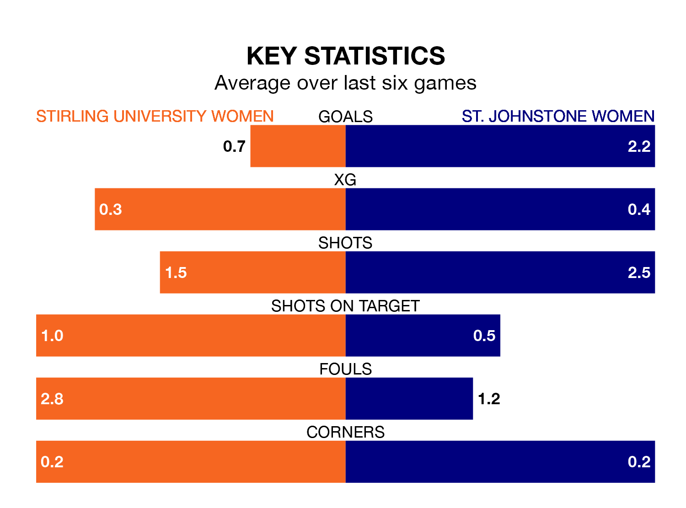

Sunday's early match at Gannochy Sports Centre Stirling University sees two relegation candidates play each other, as bottom of the table Stirling University Women host fifth-placed St. Johnstone Women.
Stirling University have picked up 16 points from their first 16 SWPL 2 games, with four wins and four draws.
That is nine points less than St. Johnstone have collected, having won eight and drawn one.
With 17 goals in 21 games so far this season, Stirling University are the league's lowest scorers with 0.8 goals per game. And they are conceding more than average, letting in 69 goals at a rate of 3.3 per game.
St. Johnstone, meanwhile, are above average scorers, with 2.0 goals per game, compared to a league average of 1.9. They have conceded 2.1 goals per game.
In the last 10 years, Stirling University and St. Johnstone have played each other on 13 occasions. Stirling University won two of them, St. Johnstone nine, and they drew twice.
On average, Stirling University scored 1.1 goals and St. Johnstone 3.0 in those matches.
Their last meeting was on March 10, when St. Johnstone won 5-0 at home.
The home team are in bad form in SWPL 2, with one win and a draw from their last six games.
With three wins and a draw over that period, the visitors' form is much better – they have taken 10 points from 18, compared to Stirling University's four.
Stirling University's last match was on March 17, a 2-1 loss against Livingston Women, with getting the goal for Stirling University.
St. Johnstone lost 3-2 against Kilmarnock Women last time out, also on March 17, with on the scoresheet.
Updated: 10:31 (UTC), 31/03/24